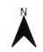

Introduction to QGIS
CRD 298 - Spatial Methods in Community Research
Professor Noli Brazil
In this guide you will learn how to make a map in QGIS. The objectives of the guide are as follows
- Get familiar with the QGIS interface
- Load vector and text delimited data into QGIS
- Joining shapefile and attribute data
- Creating and saving maps
This tutorial scratches the surface of what you can do with QGIS. You can get more practice by using the official QGIS training manual here. They also have a more Gentle Introduction to QGIS
What is QGIS?
Geographic information systems (GIS) are used in a wide range of academic and applied fields. Simply put, GIS allows you to combine tabular data (e.g. spreadsheet sheet) with geographic boundaries (e.g. maps). QGIS (or Quantum GIS) is an open source geographic information system, meaning that it can be downloaded and installed on your desktop free of charge. It runs on Windows, Mac OS X, and Linux. If you have used ArcGIS before, QGIS is very similar, except it has less functionality but is free.
Downloading QGIS
You can download QGIS at their website. I generally recommend working with the most recent version of QGIS available or the most recent Long Term Release, which is designed to be maintained with bug-fixes and such for the next three release cycles. Long term releases might not have the most newest features found in the most recent version, but focus is broader stability across time. At the time of writing, the most recent version is 3.2.2; the long-term release is 2.18.9.
This tutorial is based on 3.2.2 for Windows. Other than installation instructions, there should be no noticeable difference between Mac and PC versions
Windows users: You will need to choose between the 32-bit or 64-bit versions based on your particular operating system. If you don’t already know which one you have, you can figure it out. Download the installer under Standalone installers from OSGeo4W packages.
Mac users: Before you run the installer, you’ll need to make sure you can add new software to your Mac. Go to your System Preferences (under the Apple menu), and click on “Security & Privacy”. Click the lock icon in the bottom left to make changes. For the section titled “Allow apps downloaded from:”, Check the “Anywhere” radio button. Now you are ready to install. When you open the disk image that you downloaded, you’ll see the following files.

Figure 1: Mac QGIS Download package
First thing to do is to read the Read Me.rtf file. You must install Python, GDAL, and QGIS in that order. Installing separate components like this can seem a bit weird if you’re not used to installing open source software, but it’s actually a very common process.
Download Lab Files
Go to the Additional Labs -> QGIS Canvas folder and download the zip file qgis onto your Desktop or a convenient place on your hard drive that you can readily access. Unzip the folder. The folder will contain shapfiles and csv files that we will be using in the lab.
QGIS Interface
Open up QGIS. You should see an interface similar to Figure 2.

Figure 2: QGIS Interface.
The components of the interface are as follows
- Main Menu: Provides access and functions of the applications in a standard pull down menu format.
- Toolbars: Buttons that provide one click access to many of the features and functions found in the Main Menu. Toolbars are movable and can be docked or free floating. You can also customize what toolbars to show by right clicking (on a Windows machine) or Ctrl + clicking (on a Mac laptop) on one of the toolbars and selecting/deselecting from the menu.
- Browser Panel: Shows a listing of files on your computer. You can drag and drop GIS files into the Layers Panel (4) to view them.
- Layers Panel: Shows a listing of map layers and data files that are in your current project. Layers can be turned off and on, change drawing order, etc. Think of this as a Table of Contents.
- Map Display Panel: Shows a geographic display of GIS layers in the Layers panel.
- Status Bar: Shows the current scale of the map display, coordinates of the current mouse cursor position, and the coordinate reference system (CRS) of the project. For now, we won’t worry too much about this bar.
Bringing in a shapefile
Let’s bring in a shapefile. You can do this a number of ways.
- Select Layer in the Main Menu panel and scroll over Add Layer. You’ll find the various types of files you can bring into QGIS.
- Select Layer in the Main Menu panel and select Data Source Manager. This will bring up a screen (Figure 3) that will allow you to add files.
- You can bring up the Data Source Manager by clicking on
 typically located on the far left toolbar
typically located on the far left toolbar
Figure 3: Data Source Manager
Let’s use the Data Source Manager approach. We want to bring in a shapefile showing Census tracts in Sacramento county. As we discussed in Lecture, tracts are areal data, also known as Vector data. From the Data Source Manager window
- Select
 on the left panel. This should bring a screen shown in Figure 4.
on the left panel. This should bring a screen shown in Figure 4.
Figure 4: Adding Vector Data
- Under Source, click on
 at the far right.
at the far right.
- Navigate to the folder containing the files you downloaded from the Canvas. Select the file “Sacramento_County_Tracts.shp”. To be clear, you will see a bunch of files named “Sacramento_County_Tracts”. Double click on the one highlighted in red in Figure 5.

Figure 5: Click on the shapefile
- Click on the Add button
 and close the Data Source Manager. You should see tracts in Sacramento county pop up (Figure 6).
and close the Data Source Manager. You should see tracts in Sacramento county pop up (Figure 6).
Figure 6: Sacramento county tracts
Bringing in a data file
We got a shapefile into QGIS. Hooray! But, we need to map something. Let’s bring in some data to map. This will come in as a .csv. Go back to the Data Source Manager and follow the steps below.
- Click on

- Click on located at the far right next to the File Name box. We are going to bring in a csv (comma delimited) file containing tract-level percent Hispanic and percent poverty for the United States. This is contained in the file tracts_demographics.csv. Navigate to the folder containing that file and double click on it.
- Leave all the default settings alone except for Geometry definition.
- Click on the radio button next to No geometry (attribute only table). Your final setup should look like Figure 7.
Figure 7: Bringing in a csv file
- Click on Add and then Close. The file tract_demographics should pop up in your Layers panel above Sacramento_County_Tracts like in Figure 8.

Figure 8: Layers panel
Joining a csv to a shapefile
We now want to attach (merge) the csv data to the shapefile. To do this, follow the steps below
- Right click on the Sacrament_County_Tracts file in the Layers panel. You should get a menu like in Figure 9.

Figure 9: Right click on a layer
- Click on Properties. A window should pop up that looks like Figure 10.
- Click on the Joins button
 . Click on
. Click on  located at the bottom.
located at the bottom.
Figure 10: Layer properties
- From the Join layer pull down menu at the top, select tracts_demographics (if it isn’t already selected for you).
- Under Join field, select GEOID
- Under Target field, select GEOID. We are joining the data from tracts_demographics to Sacramento_County_Tracts using a common ID field - named GEOID in tracts_demographics and GEOID in Sacramento_County_Tracts (this is similar to how we were merging data in R).
- Check the Custom field name prefix box - a white box should pop up underneath - delete the text (tract_demographics_). If we did not do this, the variables phisp will be named tract_demographics_phisp in the Sacramento_County_Tracts file, which is far too long a name. By deleting it, we’ll keep the name to phisp.
- The Add Vector Join window should look like Figure 11. Click OK. Click OK again in the next screen.
Figure 11: Add Vector Join
To verify that the join worked, you can open up the attribute table for the shapefile. An attribute table consists of rows representing spatial features (census tracts), and columns representing properties or characteristics of the spatial feature (e.g. percent Hispanic). It’s a nonspatial dataset attached to the spatial dataset. To bring up the attribute table, right click on Sacramento_County_Tracts from the Layers panel and select Open Attribute Table. The table should pop up and contain 317 rows corresponding to the 317 tracts we have displayed on the map screen. Scroll all the way right - you should see the variables we added from tracts_demographics: ppov (percent poverty) and phisp (percent Hispanic).

Figure 12: Attribute table
Joining data to the shapefile is not permanent. If you close QGIS, reopen it, and bring in Sacramento_County_Tracts, you will find that phisp and ppov are no longer in the attribute table. You will need to save a new shapefile to make this join permanent. To do so, follow the steps below.
- Right click on Sacramento_County_Tracts
- Select Export and then select Save Features As. A Save Vector Layer as… window should pop up.
- For Format, keep it as an ESRI Shapefile.
- For File name, select and navigate to the appropriate folder. Give your new file the name “Sacramento_County_Tracts_Dems.shp”.
- Keep everything else the same. You should have a window that looks like Figure 13. Click OK.
Figure 13: Attribute table
You should see Sacramento_County_Tracts_Dems pop up in your Layers panel. Because we only need this shapefile moving forward, remove tracts_demographics and Sacramento_Country_Tracts by right clicking on each from the Layers panel and selecting Remove Layer.
Making a map
Let’s map percent poverty at the tract level for the county of Sacramento. The first thing to do is to symbolize our map based on percent poverty.
- Right click on Sacramento_County_Tracts_Dems and select Properties.
- Select the Symbology button
 on the left panel.
on the left panel.
- From the top pull down menu, select Graduated (the default should be Single symbol). A graduated map relates values to color gradients on a map; each color gradation corresponds to a specific interval of values.
- That selected variable is percent poverty. From the Column pull down menu, select ppov
- Leave Symbol alone. In Legend Format, reduce the precision down to 2 (this will show percent poverty in two decimal points in the legend)
- You can select whatever color scheme you would like using the pull down menu from Color ramp. I kept it at the default - a graduated color scheme of white to dark red.
- The Mode tells QGIS how to break up the values. Remember from Lecture that you can easily distort your data by choosing different break values. Select Quantile (Equal Count) and keep Classes to 5. This will break up the values by quintile (bottom 20%, 20% to 40%, 40% to 60%, 60% to 80%, and top 20%).
- The final setup should look like Figure 14. Click OK
Figure 14: Symbology setup
You should get something that looks like Figure 15.
Figure 15: Map showing percent poverty in quintiles
Using Map Layout Manager
QGIS has a powerful tool called Layout Manager that allows you to take your GIS layers and package them to create and save pretty maps. Why do we need this tool? A GIS map file is not an image. Rather, it saves the state of the GIS program, with references to all the layers, their labels, colors, etc. So for someone who doesn’t have the data or the same GIS program (such as QGIS), the map file will be useless.
From the Main Menu go to Project and click on New Print Layout. A dialog box will pop up asking you for a title - type in “Percent Poverty by Census Tract in Sacramento County”
Figure 16: Map title
You should see a screen that looks like Figure 17 pop up. This is known as the Map Layout screen.
Figure 17: Map layout screen
Let’s go through each component of the Layout screen
- Main menu: Provides access and functions of the applications in a standard pull down menu format.
- Toolbars: There are toolbars located at the top and the left of the screen. These toolbars provide buttons to perform various functions. Right click to choose which toolbars to show
- Map window: This is where your map will be displayed. This includes legends, labels, titles, scale bars, north arrows, and other map accouterments.
- Items and History: This window provides two basic pieces of information: (1) what items are on your map (for the items you can add to your map, look at the menu Add Item from the main menu). Think of this as a table of contents. (2) all the actions you’ve done to your map. This can be simple actions like moving the legend around.
- Layout and properties: This window provides the properties of a selected item on your map. This is where you can change the appearance of any item on your map. For example, you can change the size of your legend font. The item whose properties you are viewing is listed at the top of this window - for example, if you are adjusting the legend, it will say Legend at the top of this panel.
To add our map, select Add Item from the Main Menu of the new screen and select Add Map. Nothing should happen. However, your mouse cursor should look like a black cross. Move your cursor to the top left corner of the white canvas and drag it to the bottom right corner to create a rectangle. See Figure 18.
Figure 18: Adding your map
The map of Sacramento county maps should pop up. With the map now displayed, you can
- Move the map by clicking and dragging it around
- Resize it by clicking and dragging the boxes in the corners
- Add map details such as a legend and title.
The scale of the map shown in the Map Layout will match what is shown in the main interface. If you want to make the map bigger or smaller in the Map Layout window, you can change the scale from the Status bar in the main interface. For example, the current scale I have in the main interface is  . I can zoom in a little more - I can do that using the
. I can zoom in a little more - I can do that using the  tool or just type a scale in directly to the scale box. I do the latter by typing in 1:300000 as such
tool or just type a scale in directly to the scale box. I do the latter by typing in 1:300000 as such  . The scale in the Map Layout window will not update - you will have to do it manually. Go back to the Map Layout window. Click anywhere on your map. On the bottom right panel, click on Item Properties, scroll down midway, and click on the button Set to map canvas extent. You should see Sacramento county fills up the page a little more.
. The scale in the Map Layout window will not update - you will have to do it manually. Go back to the Map Layout window. Click anywhere on your map. On the bottom right panel, click on Item Properties, scroll down midway, and click on the button Set to map canvas extent. You should see Sacramento county fills up the page a little more.
Figure 19: Scale of 1:350912
Figure 20: Scale of 1:300000
Add a legend
1. Click on Add Item from the Main Menu of the Map Layout window
2. Click on Add Legend.
3. The same cross cursor will pop up, which means you’ll need to click, hold and drag to the place where you want to place the legend.
If you want to customize the legend, click on the legend, check the bottom right panel and click on Item Properties. A window named Legend should be there. You can customize how the legend looks by playing around with the properties. For example, we can give the legend a more descriptive name by double clicking on Sacramento_County_Tracts_Dems under Legend items
This should bring up a little dialog box. Under Item text, give the legend a more descriptive name, such as “Percent Poverty”. We can also change the title “Legend” by simply clicking in the white text box next to Title under Main Properties and typing a title name. You can change the font size and color by altering the properties under Fonts.
Add a scale bar
A scale bar is an important component of a map because it gives the viewer a visual indication of the size of features, and distance between features, on the map. To add a scale bar
- Click on Add Item from the Main Menu of the Map Layout window
- Select Add scale bar.
- Click, hold and drag to place your scale bar, usually somewhere in the bottom right or left of the map.
Similar to legend, the scale bar properties should pop up in the bottom right panel. You can change its properties, for example going from Kilometers to (the US centric) miles. So far, here’s what our map looks like.
Add a North arrow
Adding a north arrow improves many maps, especially large-scale maps that show a smaller area in great detail and maps that are not oriented with north at the top. To add a north arrow
- Click on Add Item from the Main Menu of the Map Layout window
- Select Add Picture.
- Click, hold and drag to place the arrow, usually in one of the corners.
- You’ll notice that nothing popped up. Go to the Item Properties for the Picture. Scroll down a little until you see Search directories - click on the arrow and you should see some preloaded images pop up (Figure 22)

- Select your favorite north arrow image.
After selecting it, you can customize as you see fit. For example, my arrow looks like 
How did I make the arrow look like this? Under Main properties, I selected Middle in the Placement pull down menu to center the arrow. I then selected black in the pull down menu next to Fill color under SVG Parameters to make the arrow black.
Add a title
You can’t have a map without a descriptive title.
- Under Add Item, select Add label.
- Click, hold, drag a rectangle across the top of the map.
- Click on the title and under Item Properties, a Label panel should have popped up. Under Main properties, add a title (I used “Tract Percent Poverty in 2016, Sacramento County”).
As with all features, you can customize as you see fit. Under Appearance, I clicked on the Center radio button under Horizontal alignment and the Middle radio button under Vertical alignment. This will center the title text. I clicked on the pull down menu directly under Appearance and increased the font size to 25. My map now looks like Figure 23.
Adding context
Right now, it looks like Sacramento county is floating in space. There’s nothing necessarily wrong with this - check this gallery of QGIS maps or even do a basic Google search of Sacramento poverty map and you’ll find plenty of maps without context. But, we can provide some context to the map by adding a background. We can do this two ways.
Adding a base layer
A base layer provides geographical context to a region of interest. For example, a base layer might help viewers orient themselves to a specific county by displaying the surrounding counties. Let’s add a base layer of California census tracts to the map.
- Go back to the main interface and open up the Data Source Manager.
- Go to Vector and navigate to the folder you downloaded from Canvas and select California_Tracts.shp. You should see your screen fill up with all census tracts in California.
- You’ll see these tracts obscuring the Sacramento_County_Tracts_Dems layer. Change the layer order by clicking, holding and dragging the California_Tracts layer below Sacramento_County_Tracts_Dems in the Layers panel. You should see your symbolized map pop up.
- When I brought in California_Tracts, they appeared in this ugly green color. Bring up symbology for California_Tracts (right click on California_Tracts and select Properties and then Symbology) to change the color. Select a color of your choice from the Color menu. I chose white.
- Your map in the Layout view should automatically update to reflect your changes. If it doesn’t, click on the map in Layout view and select Item Properties. Under main properties, click on the Update preview button.
- You’ll also need to do some minor style changes to the items on your map. For example, I added a white background to the title, legend, scale bar, and north arrow. To do this, for each item, go to its item properties, scroll down and click on the white box next to Background.
- You’ll need to make a couple more changes to the legend.
- Add a frame to the legend to distinguish it from the rest of the map - to do this, click on the box next to Frame.
- The legend has white listed for tracts with 0.00 to 0.07 percent poverty. We’ll need to change that color to distinguish it from the tracts in the background, which are all white (you won’t have to worry about this if you chose to color California_Tracts with another color). To do this, double click on
 from the Layout panel in the main interface. The screen below should pop up.
from the Layout panel in the main interface. The screen below should pop up.

Figure 24: Changing symbol color
Select the pop down menu next to Color. From there, move the black circle towards a light pinkish color.
Figure 25: Changing symbol color
Click OK - the symbol should now no longer be white but look something like  * You’ll notice that a symbol for California_Tracts pops up in the legend of your map. Let’s eliminate that because it’s not necessary. To do this, turn off Auto update under Legend items by unchecking the box. Then click on the California_Tracts
* You’ll notice that a symbol for California_Tracts pops up in the legend of your map. Let’s eliminate that because it’s not necessary. To do this, turn off Auto update under Legend items by unchecking the box. Then click on the California_Tracts  and then click on
and then click on  . California_Tracts should disappear from the legend. You should get a map that looks like Figure 26.
. California_Tracts should disappear from the legend. You should get a map that looks like Figure 26.
Figure 26: Map with background tracts
Add a basemap
The function of a basemap is to provide background detail necessary to orient the location of the map. QGIS does not have basemaps preloaded. You’ll need to rely on a QGIS plugin to get a basemap. QGIS plugins are user created functions and applications - remember that QGIS is open software, so if you are a programmer, you can create and add to QGIS’ basic functionality by making your own QGIS tools.
To add a plugin
- Select Plugins from the main menu
- Select Manage and Install Plugins.
- In the text box at the top of the window that pops up, type in QuickMapServices, a plugin for finding datasets and basemaps.
- Click on the plugin and hit Install.
You should see some new buttons  pop up in your toolbars. Select
pop up in your toolbars. Select  and you can select basemaps from a variety of different sources. OSM is Open Street Maps, a free crowd sourced editable map. Select OSM and select standard. The OSM basemap should pop up both in the Map and Layout views. Customize the map as you see fit. I ended up with the map shown in Figure 27
and you can select basemaps from a variety of different sources. OSM is Open Street Maps, a free crowd sourced editable map. Select OSM and select standard. The OSM basemap should pop up both in the Map and Layout views. Customize the map as you see fit. I ended up with the map shown in Figure 27
Figure 27: Map with basemap
Saving your map
Ultimately, you’ll want to share this map with others. You usually do that by sharing it as a jpeg or pdf. If you save it as a jpeg, you can paste it into a word document or PowerPoint presentation. To export your map into one of these formats
- Select Layout from the Main Menu of the Layout view.
- Select either Export as Image or Export as PDF.
- Save the file with an appropriate name in the appropriate folder.
Saving your project
When saving a project you are not saving actual data files. That is, you are not saving Sacramento_County_Tracts_Dems. Project files do not contain maps, instead they contain information on where original shapefiles are stored and what processes are needed to recreate a map. A saved project file includes information about the path to each data layer included as well as your choices about symbology, labels, and layer order. Before closing QGIS, users should save their progress in a Project file so it can be used and edited in the future. It is important to note that all shapefiles associated with the map must stay in their original location. If they are moved, QGIS will not be able to locate the files and rebuild the map. To save a project
- From the Main Menu of the main interface, select Project
- Select Save
- Navigate to the folder that contains the data you’ve uploaded into your current project. Type in an appropriate name and select Save.
The project file will be saved as a .qgz, which can be only opened in QGIS.